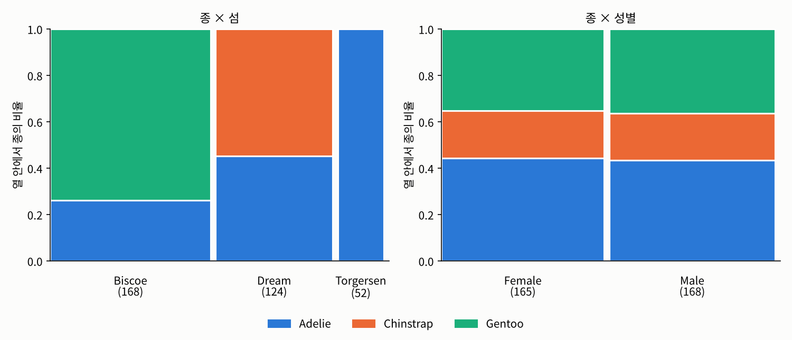

4.1 분할표와 조건부 상대도수
4장 두 변수 사이의 관계 · 두 범주형 변수를 함께 세기
들어가며
장 소개 글에서 두 변수의 관계를 보는 도구는 변수의 종류에 따라 다르다고 했습니다. 이번 글에서는 두 변수가 모두 범주형인 경우를 다룹니다.
2.2에서 변수 하나의 값을 세어 도수분포표를 만들었던 것처럼, 이번에는 두 변수의 값의 조합을 세어 분할표를 만듭니다. 그다음 분할표를 가장자리와 안쪽에서 읽는 방법인 주변도수와 조건부 상대도수를 정의하고, 이를 그림으로 나타낸 모자이크 플롯을 그립니다. 마지막으로 “두 변수가 아무 관계가 없다면 분할표가 어떻게 생겼어야 하는가”를 계산해 보겠습니다.
어느 섬에 어떤 펭귄이 살까요?
펭귄 데이터에는 각 펭귄의 종과 함께 조사된 섬이 기록되어 있습니다. 종과 섬의 조합마다 펭귄이 몇 마리인지 세어 보겠습니다.
import pandas as pd
import seaborn as sns
penguins = sns.load_dataset("penguins")
table = pd.crosstab(penguins["species"], penguins["island"], margins=True, margins_name="합")
print(table)island Biscoe Dream Torgersen 합
species
Adelie 44 56 52 152
Chinstrap 0 68 0 68
Gentoo 124 0 0 124
합 168 124 52 344표 하나에 많은 정보가 담겨 있습니다. 아델리펭귄(Adelie)은 세 섬 모두에서 발견되었지만, 턱끈펭귄(Chinstrap)은 Dream 섬에서만, 젠투펭귄(Gentoo)은 Biscoe 섬에서만 발견되었습니다. Torgersen 섬에는 아델리펭귄만 있습니다. 섬을 알면 종에 대해 꽤 많은 것을 알 수 있다는 뜻이고, 이것이 두 변수 사이에 관계가 있다는 말의 의미입니다.
분할표
이 표를 정확히 정의해 보겠습니다.
2.2의 도수 정의와 똑같은 구조입니다. 다만 값 하나 대신 값의 쌍이 특정 조합과 같은지를 지시함수로 세었을 뿐입니다. 위 표에서 \(x\)는 종, \(y\)는 섬이고, 예를 들어 (Adelie, Dream)의 절대도수는 56입니다.
“분할”(contingency)이라는 말은 원래 “서로 의존하는 관계”라는 뜻으로, 이 표가 처음부터 두 변수 사이의 관계를 보려는 목적으로 만들어졌다는 것을 보여 줍니다. 변수가 셋 이상이면 3차원 이상의 분할표도 생각할 수 있습니다. 예를 들어 종, 섬, 성별을 함께 세면 \(3 \times 3 \times 2\) 분할표가 됩니다.
표의 가장자리: 주변도수
위 표의 마지막 열과 마지막 행에는 “합”이 있습니다. 이것도 이름이 있습니다.
점 \(\cdot\)은 “그 자리의 첨자에 대해 모두 더했다”는 표시입니다. 표의 가장자리(margin)에 적히기 때문에 “주변”이라는 이름이 붙었습니다.
주변도수는 사실 변수 하나만 따로 본 도수분포입니다. 행 합 152, 68, 124는 섬을 무시하고 종만 센 도수분포이고, 2.2에서 셌던 종별 도수와 같습니다. 열 합 168, 124, 52는 종을 무시하고 섬만 센 도수분포입니다. 그리고 행 합을 모두 더해도, 열 합을 모두 더해도 오른쪽 아래의 \(n = 344\)가 됩니다.
여기서 중요한 사실이 하나 있습니다. 주변도수만으로는 분할표를 되살릴 수 없습니다. 종별 마릿수와 섬별 마릿수를 알아도, 어느 섬에 어느 종이 사는지는 알 수 없습니다. 두 변수의 관계에 대한 정보는 분할표의 안쪽에만 들어 있습니다.
표의 안쪽: 조건부 상대도수
분할표의 안쪽을 읽는 방법은 “한 변수의 값을 고정했을 때 다른 변수가 어떻게 분포하는가”를 보는 것입니다.
말로 하면, \(f_X(a_i \mid b_j)\)는 “\(y\)가 \(b_j\)인 관측 단위들만 모았을 때, 그중 \(x\)가 \(a_i\)인 것의 비율”입니다. 섬별로 종의 조건부 상대도수를 계산해 보겠습니다. 판다스에서는 normalize="columns"로 각 열을 그 열의 합으로 나눌 수 있습니다.
import pandas as pd
import seaborn as sns
penguins = sns.load_dataset("penguins")
# 섬이 주어졌을 때 종의 조건부 상대도수 (열마다 합이 1)
print(pd.crosstab(penguins["species"], penguins["island"], normalize="columns").round(3))island Biscoe Dream Torgersen
species
Adelie 0.262 0.452 1.0
Chinstrap 0.000 0.548 0.0
Gentoo 0.738 0.000 0.0Biscoe 섬에서 조사된 펭귄의 73.8%는 젠투펭귄이고, Dream 섬에서는 54.8%가 턱끈펭귄이며, Torgersen 섬은 100% 아델리펭귄입니다. 섬마다 종의 분포가 전혀 다릅니다.
어느 쪽을 조건으로 두느냐에 따라 답하는 질문이 다릅니다. “Biscoe 섬 펭귄 중 젠투펭귄의 비율”은 \(124/168 \approx 0.738\)이지만, “젠투펭귄 중 Biscoe 섬에 사는 비율”은 \(124/124 = 1\)입니다. 같은 칸 \(h_{ij}\)를 행 합으로 나누느냐 열 합으로 나누느냐의 차이입니다. 두 비율을 혼동하는 것은 아주 흔한 실수인데, 5장에서 조건부 확률을 다룰 때 이 문제를 다시 만나게 됩니다.
모자이크 플롯
조건부 상대도수를 그림으로 나타내는 방법이 모자이크 플롯(mosaic plot)입니다. 정사각형을 먼저 한 변수(여기서는 섬이나 성별)의 주변 상대도수에 비례하는 폭으로 세로로 자르고, 각 조각을 그 안에서의 다른 변수(종)의 조건부 상대도수에 비례하는 높이로 다시 가로로 자릅니다. 그러면 각 직사각형의 넓이는 그 조합의 상대도수 \(f_{ij}\)가 됩니다.

두 그림을 비교하면 차이가 분명합니다. 왼쪽 종×섬 그림에서는 기둥마다 색의 경계 높이가 제각각입니다. 섬마다 종의 분포가 다르다는 뜻입니다. 오른쪽 종×성별 그림에서는 암컷 기둥과 수컷 기둥의 색 경계가 거의 같은 높이에 있습니다. 암컷이든 수컷이든 종의 분포가 비슷하다는 뜻이고, 이 데이터에서 종과 성별 사이에는 이렇다 할 관계가 없어 보입니다. 성별을 알아도 종에 대해 새로 알게 되는 것이 거의 없으니까요.
관계가 없다면 표는 어떻게 생겨야 할까요?
오른쪽 그림처럼 “조건부 분포가 조건과 상관없이 모두 같다”는 상황을 조금 더 정확히 생각해 보겠습니다. 이 상황을 두 변수가 관계가 없다, 또는 (데이터 수준에서) 독립이라고 부를 수 있을 것입니다. 그렇다면 분할표의 각 칸에는 몇이 들어 있어야 할까요?
정리의 의미는 이렇습니다. 조건부 분포가 모두 같다면, 그 공통의 분포는 결국 전체를 합친 분포, 즉 주변분포일 수밖에 없습니다. 그러니 각 칸은 “행의 총 마릿수 × 그 열이 전체에서 차지하는 비율”이 됩니다. 예를 들어 펭귄 344마리 중 섬 Biscoe의 비율이 \(168/344\)이라면, 종과 섬이 관계가 없을 때 아델리펭귄 152마리 중 Biscoe에 있어야 할 마릿수는 \(152 \times 168/344 \approx 74.2\)마리입니다.
이렇게 주변도수만으로 계산한, 관계가 없을 때 기대되는 칸의 값에 이름을 붙여 두겠습니다.
실제 분할표 \(h_{ij}\)와 기대도수 \(\tilde{h}_{ij}\)를 비교하면, 두 변수가 관계없다는 그림에서 실제 데이터가 얼마나 벗어나 있는지 볼 수 있습니다. 종×섬과 종×성별에 대해 계산해 보겠습니다. 성별이 기록되지 않은 펭귄 11마리는 종×성별 표에서 뺐습니다.
import pandas as pd
import seaborn as sns
def expected_table(observed):
"""독립일 때의 기대도수: (행 합) × (열 합) / n"""
row = observed.sum(axis=1).to_numpy()[:, None]
col = observed.sum(axis=0).to_numpy()[None, :]
return pd.DataFrame(row * col / observed.to_numpy().sum(),
index=observed.index, columns=observed.columns)
penguins = sns.load_dataset("penguins")
island = pd.crosstab(penguins["species"], penguins["island"])
print("[종 × 섬] 독립일 때의 기대도수")
print(expected_table(island).round(1))
sexed = penguins.dropna(subset=["sex"]) # 성별이 기록된 333마리
sex = pd.crosstab(sexed["species"], sexed["sex"])
print("\n[종 × 성별] 관찰도수")
print(sex)
print("[종 × 성별] 독립일 때의 기대도수")
print(expected_table(sex).round(1))[종 × 섬] 독립일 때의 기대도수
island Biscoe Dream Torgersen
species
Adelie 74.2 54.8 23.0
Chinstrap 33.2 24.5 10.3
Gentoo 60.6 44.7 18.7
[종 × 성별] 관찰도수
sex Female Male
species
Adelie 73 73
Chinstrap 34 34
Gentoo 58 61
[종 × 성별] 독립일 때의 기대도수
sex Female Male
species
Adelie 72.3 73.7
Chinstrap 33.7 34.3
Gentoo 59.0 60.0종×섬에서는 관찰도수와 기대도수가 크게 어긋납니다. 관계가 없었다면 Biscoe 섬에 턱끈펭귄이 약 33마리 있어야 했지만 실제로는 0마리이고, 젠투펭귄은 약 61마리여야 했지만 실제로는 124마리입니다. 반면 종×성별에서는 모든 칸에서 관찰도수와 기대도수의 차이가 한두 마리 이내입니다.
그렇다면 종×성별의 이 작은 차이는 “관계가 조금 있다”는 뜻일까요, 아니면 그냥 우연일까요? 1.1에서 본 것처럼 데이터에는 늘 우연이 섞여 있으니, 정말로 관계가 없는 모집단에서 뽑은 표본이라도 관찰도수가 기대도수와 정확히 같을 리는 없습니다. 차이가 얼마나 커야 “우연이라고 보기 어렵다”고 말할 수 있는지는 기술 통계만으로는 답할 수 없는 질문이고, 8장에서 다룰 카이제곱 독립성 검정이 바로 이 질문에 답합니다. 이 검정은 각 칸의 차이 \(h_{ij} - \tilde{h}_{ij}\)를 모아 하나의 숫자로 만드는데, 그 출발점이 이번 글의 기대도수입니다.
정리
이번 글에서는 두 범주형 변수의 관계를 보는 방법을 다루었습니다.
- 두 변수의 값의 조합을 센 표가 분할표입니다. 2.2의 도수를 값의 쌍으로 넓힌 것입니다.
- 분할표의 가장자리인 주변도수는 각 변수 하나만의 도수분포이며, 주변도수만으로는 두 변수의 관계를 알 수 없습니다.
- 한 변수의 값을 고정했을 때 다른 변수의 분포인 조건부 상대도수로 관계를 읽습니다. 어느 쪽을 조건으로 두느냐에 따라 답하는 질문이 다릅니다. 모자이크 플롯은 조건부 상대도수를 그림으로 보여 줍니다.
- 조건부 분포가 모두 같다면 각 칸은 \(\tilde{h}_{ij} = h_{i\cdot} h_{\cdot j} / n\)이어야 합니다. 이 기대도수와 실제 도수의 차이가 관계의 크기를 보여 주며, 그 차이가 우연인지는 8장에서 검정합니다.
이번 글의 도구는 범주형 변수를 위한 것이었습니다. 날개 길이와 몸무게처럼 두 변수가 모두 수치형이라면, 값의 조합이 거의 모두 다르니 분할표를 만들 수 없습니다. 다음 글에서는 수치형 두 변수의 관계를 그림과 숫자로 보는 산점도와 상관계수를 다루겠습니다.
연결되는 개념
- \(\leftarrow\) 이전 개념: 4 두 변수 사이의 관계
- \(\rightarrow\) 다음 개념: 4.2 산점도와 상관계수